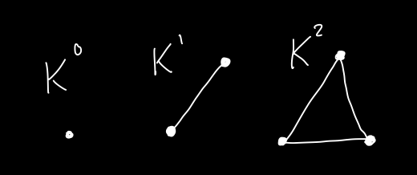
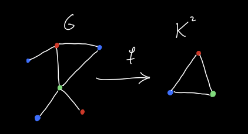
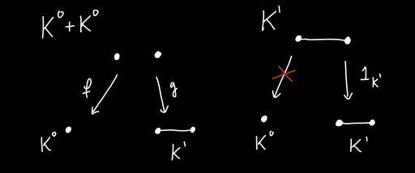
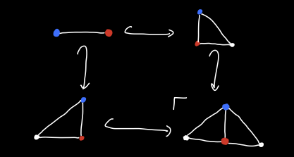
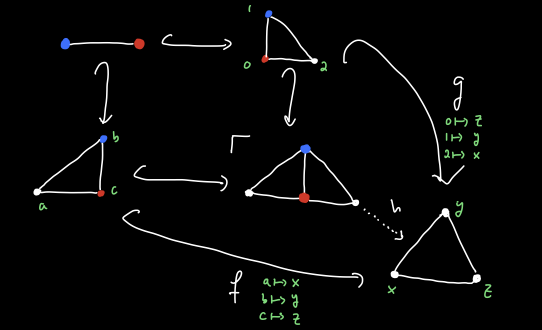

The Category of Simple Graphs, Pt. 2
I’ve decided that I’m going to write a sequence of blog posts to help me understand the following papers:
- Compositional Algorithms on Compositional Data: Deciding Sheaves on Presheaves by Althaus, Bumpus, Fairbanks and Rosiak,
- Structured Decompositions: Structural and Algorithmic Compositionality by Bumpus, Kocsis, and Master,
- Spined categories: generalizing tree-width beyond graphs by Bumpus and Kocsis.
To do so, first we’ll get comfortable with the categories of graphs we wish to consider, then moving on to adhesive categories and then to structural decompositions.
In this post I’m going to revisit the category \(\mathsf{Grph}\) and compare it to its variant \(\mathsf{rGrph}\), which we also introduced last time. They are both categories whose objects are simple graphs, but the morphisms in \(\mathsf{Grph}\) are allowed to collapse edges into vertices. The category \(\mathsf{rGrph}\) has morphisms that don’t allow edges to be collapsed. Thus we call this the category of rigid simple graphs. In the last post we looked at how to compute some simple (co)limits in \(\mathsf{Grph}\).
In some ways I found \(\mathsf{Grph}\) a more intuitive category, but there is a pretty major big advantage to working with \(\mathsf{rGrph}\) over \(\mathsf{Grph}\). Let \(K^n\) denote the \(n\)-clique, i.e. the complete, connected graph on \((n+1)\)-vertices. Then there exists a bijection
\[\{ \text{Morphisms } f : G \to K^n \text{ in } \mathsf{rGrph} \} \cong \{ \text{$(n + 1)$-colorings of $G$} \}.\]This isn’t true for morphisms in \(\mathsf{Grph}\) because there are always many maps \(G \to K^n\) for any graph \(G\). We can simply map all of \(G\) to any vertex of \(K^n\), as an example.

So in this sense, \(\mathsf{rGrph}\) is preferable, as it provides a link to the following key \(\mathbf{NP}\)-complete computational problem: Given a graph \(G\) and \(n \geq 3\), does \(G\) have an \(n\)-coloring? The theory of this computational problem ties into many areas of computer science1.

So now let us inspect \(\mathsf{rGrph}\). We know from last time that we should not expect \(\mathsf{rGrph}\) to be as nice a category as \(\mathsf{Grph}\). It is not hard to see that they have the same coproducts, but the latter category doesn’t have all pushouts (though it does have all pushouts of monomorphisms, more on this later).
Let us also show that it doesn’t have binary products. Let \(A = K^0\) be the graph with one vertex and no edges and let \(B = K^1\) be the graph with two vertices \(0\) and \(1\) and a single edge connecting them.
Now as last time, we have an adjunction \(\text{Disc} : \mathbf{Set} \rightleftarrows \mathsf{rGrph} : V\). Therefore \(V\) preserves products if they exist.
So suppose that the product \(K^0 \times K^1\) exists in \(\mathsf{rGrph}\). Then
\[|V(K^0 \times K^1)| = |V(K^0)| \cdot |V(K^1)| = 1 \cdot 2 = 2.\]So we know that \(K^0 \times K^1\) has two vertices. Since we don’t allow loops in this category, there exactly two graphs with two vertices, either \(K^0 + K^0\) or \(K^1\).
Now in order for \(K^0 + K^0\) to be a product it has to have maps \(f: K^0 + K^0 \to K^0\) and \(g: K^0 + K^0 \to K^1\). There’s only one map \(K^0 + K^0 \to K^0\), so that is fixed, and there are exactly four morphisms \(K^0 + K^0 \to K^1\).
Now let us label the single vertex of \(K^0\) as \(*\), let the vertices of \(K^0 + K^0\) be \(a\) and \(b\), and let the vertices of \(K^1\) be \(0\) and \(1\). Then in order for \(K^0 + K^0\) to be the categorical product of \(K^0\) and \(K^1\), then the map \(K^0 \to K^1\) sending \(*\) to \(0\) must factor uniquely through a map \(K^0 \to K^0 + K^0\), but this is impossible, as there are always two choices for factorization. Either I send \(*\) to \(a\) and then \(a\) and \(b\) to \(0\) and \(1\), or I send \(*\) to \(b\) and then send \(a\) and \(b\) to \(1\) and \(0\). So \(K^0 + K^0\) is not the categorical product.

Similarly \(K^1\) cannot be the categorical product simply because there is no map \(K^1 \to K^0\). Thus the product of \(K^0\) and \(K^1\) does not exist in \(\mathsf{rGrph}\).
This might be a little dissapointing, but I think it is to be expected. We shouldn’t expect \(\mathsf{rGrph}\) to have nice limits. However, I claim that \(\mathsf{rGrph}\) and \(\mathsf{Grph}\) have the same monomorphisms, i.e. letting \(\mathsf{(r)Grph}_m\) denote the subcategory of monomorphisms, we have
\[\mathsf{Grph}_m \cong \mathsf{rGrph}_m.\]First let us try and characterize the monomorphisms in \(\mathsf{Grph}\). Using the adjunction \(\text{Disc} \vdash V\) again, we know that \(V\) must preserve monomorphisms. In other words, if \(f: G \to H\) is a mono in \(\mathsf{Grph}\), then it cannot collapse edges. So every mono in \(\mathsf{Grph}\) is a morphism in \(\mathsf{rGrph}\).
In fact we know more than this. Because the functor \(V : \mathsf{Grph} \to \mathbf{Set}\) is faithful. Indeed, maps of graphs are completely determined by where they send vertices. Thus the functor \(V\) makes \(\mathsf{Grph}\) into a concrete category. This is also true for \(\mathsf{rGrph}\). It is well known2 that since \(V\) has a left adjoint, a morphism \(f\) in \(\mathsf{(r)Grph}\) is a monomorphism if and only if \(V(f)\) is injective.
Thus a morphism in \(\mathsf{Grph}\) is a monomorphism if and only if it is injective on vertices. But this is the same for \(\mathsf{rGrph}\). Thus they have the same monomorphisms.
In Spined Categories, they consider the categories \(\mathsf{Gr}_{hom}\), which is our \(\mathsf{rGrph}\) and \(\mathsf{Gr}_{mono}\), which is our \(\mathsf{rGrph}_m \cong \mathsf{Grph}_m\). These are also called \(\mathsf{Gr}_H\) and \(\mathsf{Gr}_M\), respectively in Structured Decompositions.
Note that if \(f : G \to H\) and \(g : G \to K\) are monomorphisms in \(\mathsf{Grph}\), then the pushout \(H +_G K\) exists in \(\mathsf{Grph}\) as we showed last time, and it is not too hard to show that it also exists in \(\mathsf{rGrph}\)3. However, this pushout might not exist in \(\mathsf{rGrph}_m\). Indeed, consider the following pushout.

Now there is a commutative diagram in \(\mathsf{rGrph}\) as follows:

Which induces a unique map \(h\). Now \(h\) cannot be a monomorphism, simply because there are more vertices in the domain than in the codomain. In other words, we’ve constructed a cocone in \(\mathsf{rGrph}_m\) and the colimit in \(\mathsf{rGrph}\) does not map to it by a monomorphism. Using this idea, we can show that not all pushouts exist in \(\mathsf{rGrph}_m \cong \mathsf{Grph}_m\).
However the important thing to note is that pushouts along monomorphisms exist in \(\mathsf{rGrph}\), though the resulting induced map may not itself be a monomorphism. We’ll dive more deeply into this property in the next post on adhesive categories.